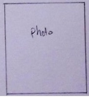

liegen in Frankreich und Italien. Dort entwickelten sich es aus Schauspiel und Gesellschaftstanz. Im Mittelpunkt steht eine aufrechte Haltung der vertikalen Körperachse, die in jeder Position beibehalten wird. Aus fünf Grundpostionen von <<<<<<< HEAD:Ballroom.html die in jeder Position beibehalten wird.
 =======
die in jeder Position beibehalten wird.
=======
die in jeder Position beibehalten wird.

>>>>>>> 70523940dd9e90f9c10767f8c0579707dca9fdd0:old_Ballroom.html
Aus fünf Grundpositionen von
Armen und Beinen entwickelt sich präzise jede weitere Bewegung dieser Kunstform.
Im Ballet werden die Bewegungen der Barre (Stange) und im Milieu (Mitte) gemeinsam
einstudiert. Die Bewegungen setzen sich aus Figuren, Schrittfolgen und Sprüngen
zusammen.
Getanzt wird häufig zu klassichen Klavierspiel, es ist nicht unüblich, dass ein
Getanzt wird häufig zu klassischen Klavierspiel, es ist nicht unüblich, dass ein
Pianist eine Probe begleitet.
Anfänger: Mo/Mi/Fr 1600-1730
Fortgeschritten: Mo/Mi/Fr 1730-1900
Kursgebühr: Auf Absprache.
Ihr seit jederzeit herzlich Willkommen an einer der Termine zum schnuppern vorbei zu kommen. Bringt Kleidung mit in der ihr euch frei bewegen könnt.